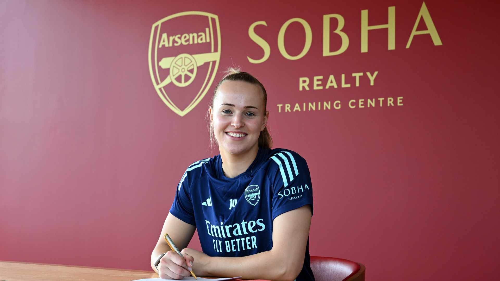

#1 • Goal Keeper • Arsenal Women
Date of Birth: 6th March 2000 (age 26)
Place of Birth: Beverwijk, Netherlands
Nationality: Dutch
International Team: Netherlands
Joined Arsenal: 2024
Past Clubs: 2017-2023 Twente 2023-2024 Aston Villa
Total Appearances: 49
Total Clean Sheets: X
Appearances This Season: 0
Clean Sheets This Season: 0
Caps: 39
Clean Sheets: X
Major Tournaments: LIST